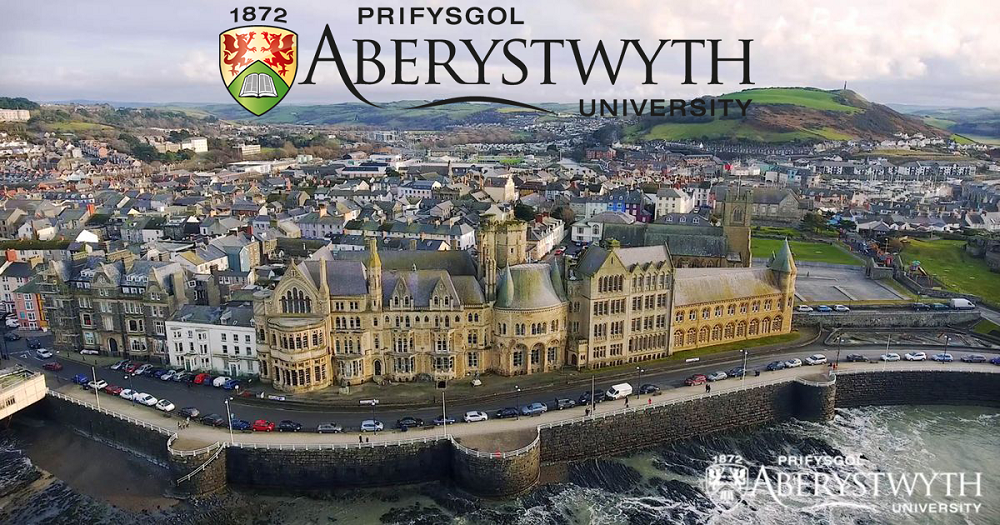

Acasă
Acasă Țări
Țări Catalog
Catalog Galerie foto
Galerie foto Experiente
Experiente Despre
DespreAberystwyth University



Descriere
Oricine a vazut apusul deasupra golfului Cardigan de la fereastra camerei sale din caminul studentesc, va recunoaste ca acesta este unul dintre cele mai impresionante locuri unde ar putea sa-si petreaca trei ani din viata sa. Infiintata in anul 1872, Universitatea Aberystwyth este cea mai veche universitate din Tara Galilor si ofera in prezent peste 900 de programe de studiu de licenta sau masterat. Biblioteca Nationala a Tarii Galilor, adiacenta campusului principal al universitatii, este una dintre cele mai mari biblioteci din lume,si una dintre singurele 5 biblioteci cu drept de autor din Marea Britanie.
Universitatea ofera o serie de programe cu o singura sau dubla specializare, cat si combinatii de specializare principala si secundara, care ii avantajeaza pe studentii care se orienteaza catre noul pas in cariera lor educationala cat si de dezvoltare personala. Pornind de la istoria facultatii, care dateaza din 1872, cateva dintre aceste cursuri reflecta discipline academice traditionale, insa altele ofera combinatii noi si unice, multe programe fiind multidisciplinare. Universitatea a avut mereu o viziune de viitor si a fost una dintre primele universitati care a admis studente de gen feminin. Universitatea Aberystwyth va ofera o serie de programe academice bine echilibrate prin prisma a 3 facultati: Arte, Stiinte Sociale si Stiinte. In plus, politica universitatii de finantare a studentilor din UE este una dintre cele mai accesibile din Marea Britanie.
In cadrul studiilor, studentii au posibilitatea sa urmeze un stagiu corespunzator specializarii alese. De obicei acest stagiu se desfasoara intre anul doi si anul trei si durata variaza intre o saptamana si 12 luni.
Studenti: 67% din studenti sunt din afara Tarii Galilor. Raportul studentilor de gen masculin fata de cel de gen feminin este de 51/49.
Informații generale
Tara: Marea Britanie
Limba de predare: Engleza
Ani de studiu: studii universitare - 3 - 4 ani; studii de master - 1 an;
Anul universitar: 3 trimestre: Septembrie / Iunie
Inceput an: Septembrie Termen limita programe universitare: 15 ianuarie (universitatile pot prelungi perioada de admitere)
Burse: Da
Campusuri: Penglais, Llanbadarn
Aeroporturi: Manchester
Taxe pentru 2018/2019: 85-125/saptamana
Programe universitare:
Accounting, Business, Economics, Finance, Management and Marketing
Agriculture
Animal Science
Biological Sciences
Childhood Studies
Computer Science & Artificial Intelligence
Countryside Management
Education
English Literature and Creative Writing
Equine Science / Studies
European Languages
Fine Art, Art History, Museum & Gallery Studies
Geography & Earth Sciences
History & Welsh History
Information Studies
International Politics
Law & Criminology
Mathematics
Physics
Psychology degrees
Sport & Exercise Science
Theatre, Film and Television Studies
Tourism Management
Welsh / Cymraeg, Celtic Studies and Irish
European Studies & Int. Relations
Art
Rural Science
Programe de master:
Art & History
Biological, Environmental & Rural Sciences (inc. Equine Science )
Computer Science
Education and Lifelong Learning
English Literature and Creative Writing
European Languages
Geography and Earth Sciences
History and Welsh History
Information Studies
International Politics
Law and Criminology
Management and Business
Mathematics & Physics
Theatre, Film and Television Studies
Psychology
Welsh and Celtic Studies
Sports & Exercise Science